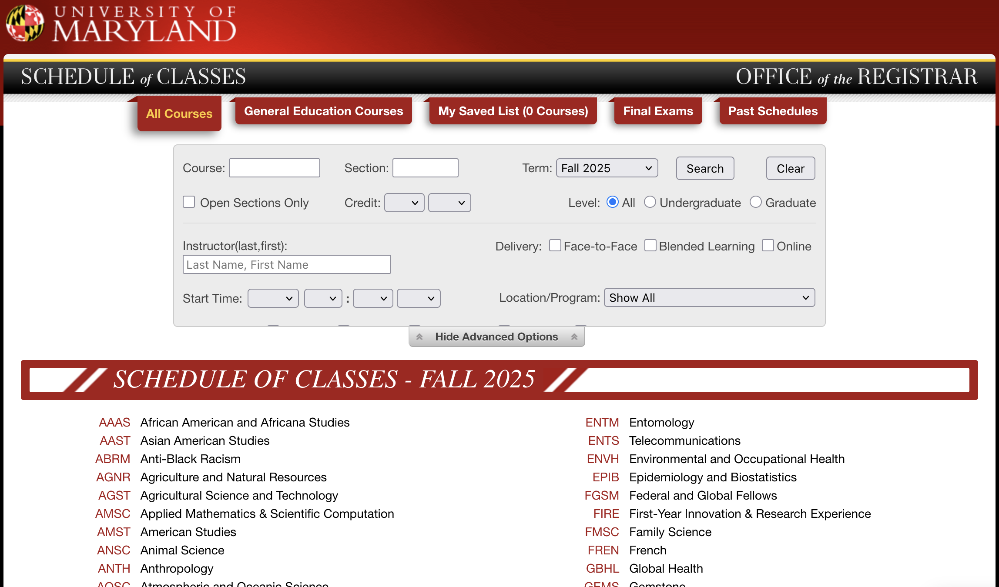
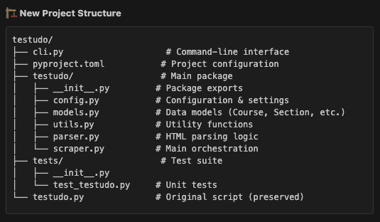
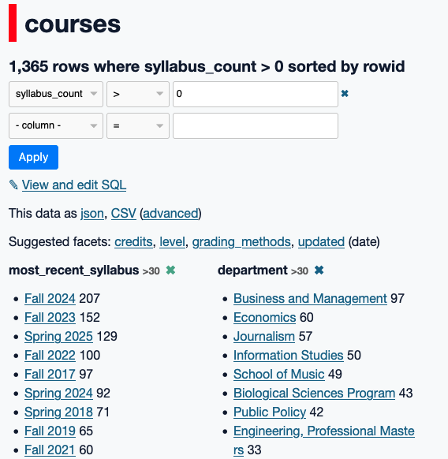

When I started teaching at Maryland in 2021, one of the first things I did was pull up the university’s Schedule of Classes, something I still do all the time. It’s a (relatively) quick way to see what classes are being offered and how many seats are available in them. As browsable web apps go, it’s not too bad. You can start by looking through a single department/college’s offerings, or you can search for a specific course or instructor.
It is not, however, a great way to search across courses and the filtering criteria available is limited. For example, I can’t see how many journalism classes offered on specific days still have seats remaining without looking at all of the open sections one by one. I also can’t see at a glance which schools are offering classes on, say, artificial intelligence. Again, this isn’t to say that the schedule app isn’t useful; it just doesn’t serve some good and necessary needs.
I wasn’t the only one who thought so; my friend Ed Summers had written some code more than five years ago that scraped the Schedule of Classes (he called it Testudo because that’s the broader course scheduler app and, of course, our mascot). It remains good, clean code that generates JSON files with details of individual classes. I decided to take that as my foundation and extend it. Some of the changes I made included adding the course level (undergraduate or graduate) and the number of course sections.
But there were more elements I wanted to add to the data, and not a lot of time to focus on doing that. That changed after I found a fall course in Computer Science that piqued my interest: CMSC398Z, Effective use of AI Coding Assistants and Agents. I’ve audited a couple of classes at UMD (thanks, tuition remission benefit!) and have really enjoyed the experience, so I checked on that option for this class. No dice, so I emailed the instructor, Bill Pugh, and asked if I could sit in. That led to some discussions and now I’ll be co-teaching the course! Which means that I need to get up to speed on using tools like Copilot, Cursor and Claude Code. My Testudo project seemed like a good opportunity to see an AI coding assistant in action.
Using Copilot with VS Code, I picked Claude 4 Sonnet as the LLM and began with some basic upgrades: switch the code to use uv for the Python environment and dependencies, and then take what was a single scraper file and make it more modular. Along the way, I asked it to create actual tests for the code and then suggest a reorganized repository. Here’s what it came up with:

My first reaction was that this might be overkill, and considering my own previous software projects, it definitely was an upgrade. But in particular the command-line interface was a big improvement, because previously if I wanted to change the scope of the scraping I’d need to edit the single testudo.py script. Claude provided not just a flexible interface but one that could be used to test out results, since at that point it wasn’t possible to scrape, say, just one department’s courses. At every step, I asked Claude to run the code it had written to see the results, and that’s a big part of why this process worked for me: I knew exactly what to expect from the output and had worked with this data for several years.
The outcome was a much more robust and flexible codebase that actually made me want to scrape the data and make use of it. That’s important, because we want software to be useful. Now if I have a question about the courses being offered by a single department, even over time, the CLI tool can fetch those for me and put them into a SQLite database. Here’s an example: a few years ago I helped shame some of my colleagues into posting their syllabi in a timely fashion, and I used the Testudo data to show where Journalism ranked among all of the colleges/departments of the university. It was a clunky process.
Now, I can run the following command:
uv run python json_to_sqlite.py data/202508 fall25_courses.dbAnd get a database of courses for this upcoming semester, which now includes the semester of the most recently-posted syllabus (if there is one). So I fire up Datasette and find that fewer than one in three courses (undergrad and graduate) have a syllabus posted, and while the most common semester for those is Fall 2024, scores of classes have syllabi from 2018 and 2019, and a few even date back to 2015! At least journalism is doing pretty well in terms of posting them, I guess.

My Copilot journey wasn’t perfect, just like any experience with coding. I had to remind it several times about using uv to run commands, and occasionally it tried to go beyond the boundaries of what I requested. Supervision is important for these coding assistants. There are still too many emojis and wildly over-confident language (it didn’t just build a tool, it built a “comprehensive tool”). I also have learned to ask for written plans in advance and wrap-up documents at the end of the process as a way of keeping track of my expectations and what actually changed.
But these coding assistants, properly supervised, make tackling issues I had little appetite for a much easier prospect, and even fun in parts. I upgraded a Rails 4 app to use Rails 7 in about 45 minutes, which I would have never even tried to do in a single day. It’s pretty clear to me, a non-expert software developer, that these assistants can be very useful and that we should be incorporating them into how we teach coding. That’s what I’m looking forward to this fall.